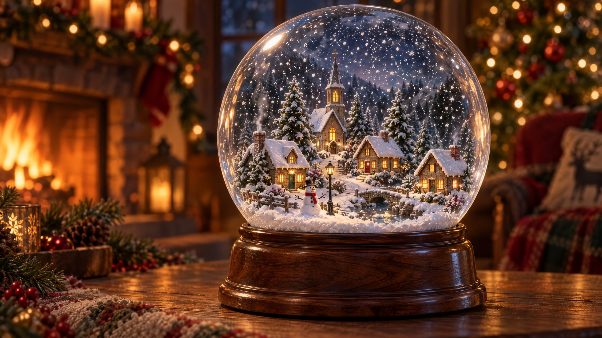

Living Photos
The Theater
Cards & Envelopes
Living Notes
Español
Dark
▮ QR
×
Scan to open this page
https://geemondc.github.io/snow-globe/
THE SNOW GLOBE
tap the globe

STILL
⛶
Still
Living
Still
Living
×